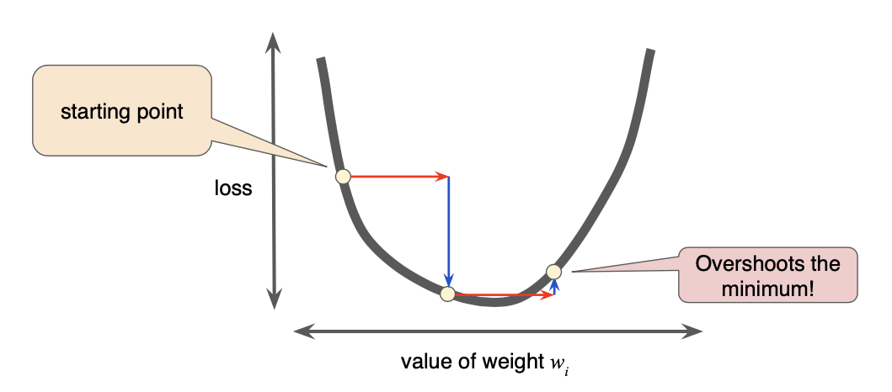
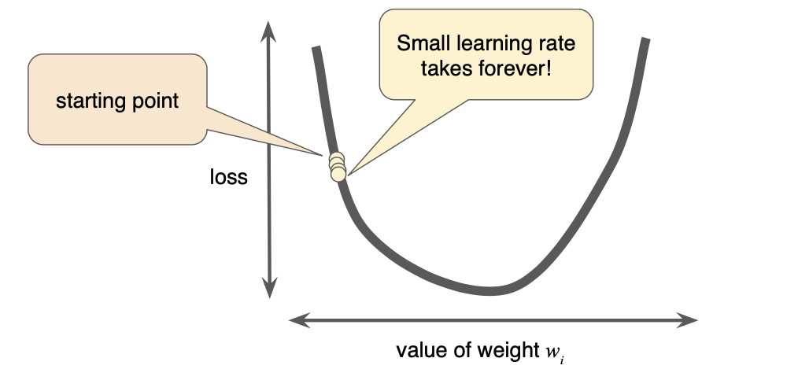
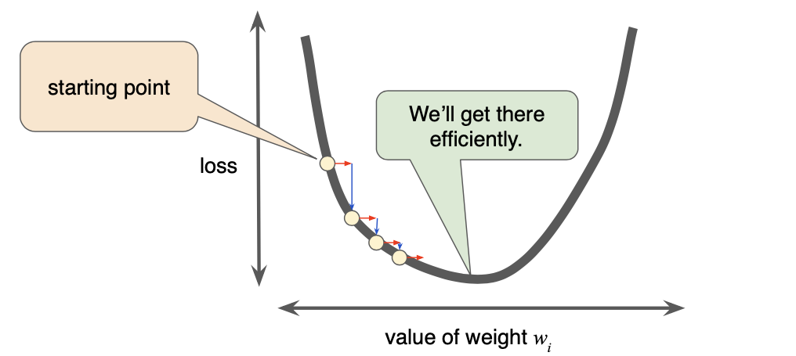
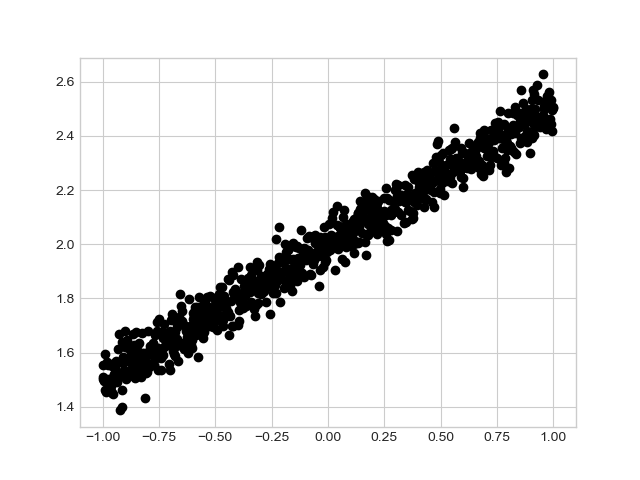

An example is Email spam filtering.
Start with some labeled data that has some “features”
< Features, Lable >
A set of email that is or is not spam. Probably start with a sizable set.
You train the “Model” to classify based on the existing set.
Then…
You give it new data that the model has never seen and let it identify if it is or is not spam.
< Features, ?? >
The Model is then used to generate the Label.
Key terms : Features, Labels, Model
Key Idea - you don’t need to know what the “features” are.
Key Idea - you don’t need to write the “program” that performs the classification.
This is much more of a “science” than traditional programming.
This requires a constant evaluation function. How do you know when you are more successful.
We will get back to this.
Example of square feet v.s. price of a house
| Price | Value |
|---|---|
| $120 | good |
| $136 | maybe |
| $142 | too much |
| $110 | something is wrong |
What is “Loss” - L-Squred, Minimization of Loss
Linear regression
Key Terms: Linear Regression, L-Squared, Minimization of Loss
Gradient Decent - this has a “tunable” learning rate parameter.
Gradient Decent combines a direction and a scale for each move. This is multiplied by the learning rate.
Given a gradient of 5.5 and a learning rate of 0.02 the algorithm will pick
the next point as 5.5*0.02 or .11 away from the current point.
This is a “goldylox” type solution.
Example of Little Moves
Example of Too Big

Example of Too Small

Example of Just Right

Nothing says that you get the “right” solution either.
Example - Interactive 3d.
https://blog.skz.dev/gradient-descent
There is math in this - The ideal learning rate in 2D is 1/(f(x))” - 2nd derivative of the function. In more dimensions it is the second partial derivative. The problem is the number of variables. Google base search has 400,000 variables - so that is 400k dimensions. The practical answer is to use some guess work based on “field knowledge” and run a set of tests.
This runs into the problem - if I have 10,000,000 input images and I guess it takes forever to train. There is good reason to believe that you can guess/train to figure out the “learning rate” on 10 to 1000 for a data size and then use this on the full set of data.
In the real world.
https://danluu.com/car-safety/
1: from __future__ import absolute_import
2: from __future__ import division
3: from __future__ import print_function
4:
5: from datetime import datetime
6: from packaging import version
7:
8: import tensorflow as tf
9: from tensorflow import keras
10: import matplotlib.pyplot as plt
11: plt.style.use('seaborn-whitegrid')
12: import numpy as np
13:
14: print("TensorFlow version: ", tf.__version__)
15: assert version.parse(tf.__version__).release[0] >= 2, "This notebook requires TensorFlow 2.0 or above."
16:
17: #######################################################################34
18:
19: data_size = 1000
20: # 80% of the data is for training.
21: train_pct = 0.8
22:
23: train_size = int(data_size * train_pct)
24:
25: # Create some input data between -1 and 1 and randomize it.
26: x = np.linspace(-1, 1, data_size)
27: np.random.shuffle(x)
28:
29: # Generate the output data.
30: # y = 0.5x + 2 + noise
31: y = 0.5 * x + 2 + np.random.normal(0, 0.05, (data_size, ))
32:
33: # Split into test and train pairs.
34: x_train, y_train = x[:train_size], y[:train_size]
35: x_test, y_test = x[train_size:], y[train_size:]
36:
37: # print ( x_train )
38: plt.plot(x_train, y_train, 'o', color='black')
39: plt.show()
40:
41: # input("Press Enter to continue...")
42: # exit(0)
43:
44: #######################################################################33
45:
46: logdir = "logs/scalars/" + datetime.now().strftime("%Y%m%d-%H%M%S")
47: tensorboard_callback = keras.callbacks.TensorBoard(log_dir=logdir)
48:
49: model = keras.models.Sequential([
50: keras.layers.Dense(16, input_dim=1),
51: keras.layers.Dense(1),
52: ])
53:
54: model.compile(
55: loss='mse', # keras.losses.mean_squared_error
56: optimizer=keras.optimizers.SGD(lr=0.2),
57: )
58:
59: print("Training ... With default parameters, this takes less than 10 seconds.")
60: training_history = model.fit(
61: x_train, # input
62: y_train, # output
63: batch_size=train_size,
64: verbose=0, # Suppress chatty output; use Tensorboard instead
65: epochs=100,
66: validation_data=(x_test, y_test),
67: callbacks=[tensorboard_callback],
68: )
69:
70: print("Average test loss: ", np.average(training_history.history['loss']))
71:
72: ## Save our trained model
73: model.save ( "./save/model.h5" )
1:
2: from __future__ import absolute_import
3: from __future__ import division
4: from __future__ import print_function
5:
6: import tensorflow as tf
7: from tensorflow import keras
8:
9: model = keras.models.load_model ( "./save/model.h5" )
10:
11: x = float(input("Enter a number> "))
12: pv = model.predict([x])
13:
14: print ( "Input {x} Output {y}".format ( x=x, y=pv ) )
15:
